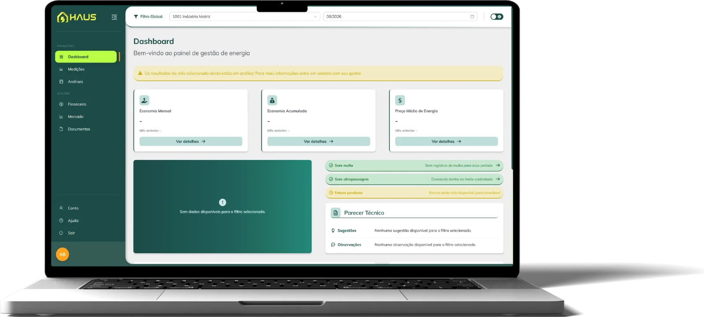

Por que migrar
Negociação facilitada de preços, previsão orçamentária do fluxo de caixa, horário de ponta com custo reduzido, escolha do fornecedor mais vantajoso e contratação de energia de fontes renováveis.
A Gestão de Energia da Ludfor vai além do convencional. Atuamos de forma proativa, combinando inteligência de mercado, análise regulatória, monitoramento contínuo e conhecimento técnico próprio.
Desenvolvemos estratégias personalizadas que reduzem riscos, otimizam custos e ampliam a competitividade de cada cliente em seu segmento de atuação.
Negociação facilitada de preços, previsão orçamentária do fluxo de caixa, horário de ponta com custo reduzido, escolha do fornecedor mais vantajoso e contratação de energia de fontes renováveis.
Análise de Risco e Inteligência de Mercado, com análise regulatória e monitoramento contínuo.
Gestão e Representação no Mercado Livre de Energia (CCEE) e de Gás Natural, além de Análise de Viabilidade, Gestão e Representação de Autoprodução de Energia.
Assessoria Jurídica, Contábil e Tributária, além de Assessoria em Energia e Consultoria Técnica.
Laudos Técnicos de Engenharia para Recuperação de ICMS, Auditorias de Faturas, TUSD e Encargos Setoriais e Certificado de Energia Renovável.
Desenvolvida exclusivamente pela Ludfor Energia para dar aos nossos clientes acesso remoto, ágil e completo às informações que realmente importam na gestão de energia.
Acompanhe o consumo em tempo real, por gráficos e tabelas, com dados da CCEE, das nossas plataformas e telemetrias. Além disso, encontre faturas, relatórios, laudos e muito mais.
Solicitar uma demonstração→

A confiança de quem conhece nossa energia.

É uma parceria de bastante confiança. A gente confia no trabalho da Ludfor, assim como eles acreditam no nosso potencial. É um ganha-ganha.

A Ludfor conseguiu baixar nosso custo de energia ano após ano, trazendo inteligência estratégica e se tornando uma parceira fundamental para o crescimento do nosso negócio.
Desde que iniciamos a nossa parceria com a Ludfor, temos nos surpreendido dia após dia, pela eficiência e qualidade do trabalho e soluções oferecidas.
A Ludfor tem atendimento próximo e ágil. O time é extremamente profissional e está sempre pronto para resolver as burocracias do dia a dia do mercado livre.
Além da compra por preços inferiores aos praticados pelo mercado cativo, 25% em média, paralisamos o uso de geradores a óleo diesel nos horários de ponta.
As respostas instantâneas e os esclarecimentos sobre nossos questionamentos fizeram com que eles conquistassem um espaço de parceria dentro da UltraCheese.
Conte o seu desafio. Construímos e preservamos parcerias de sucesso e de longo prazo com todos os nossos clientes.